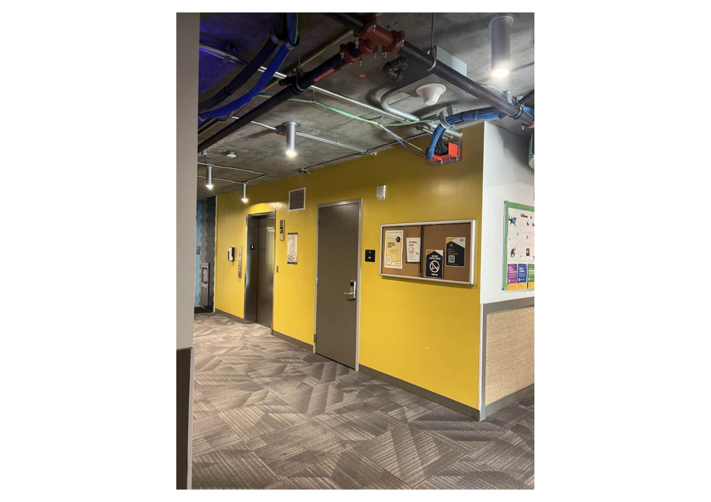
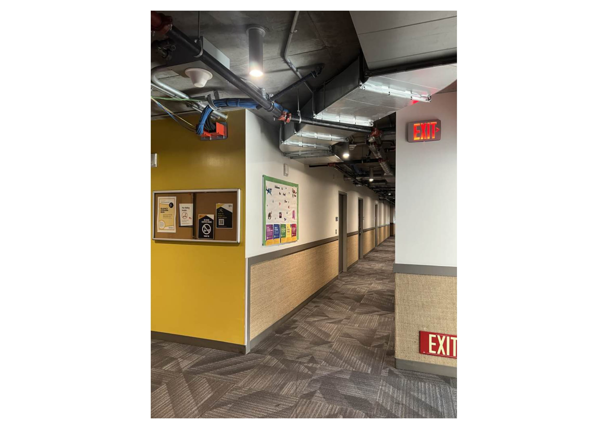
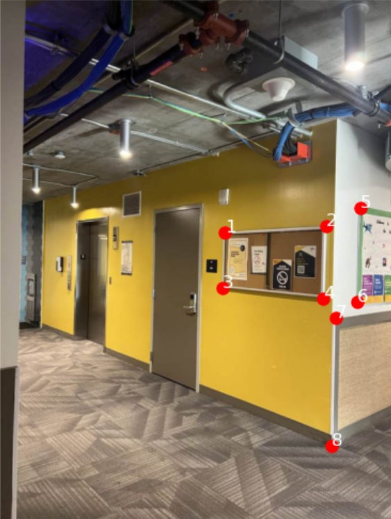
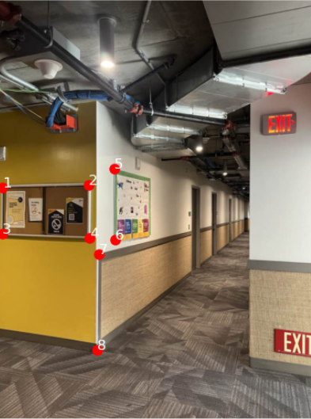
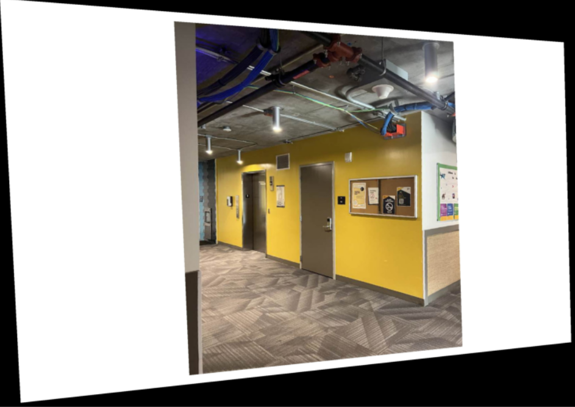
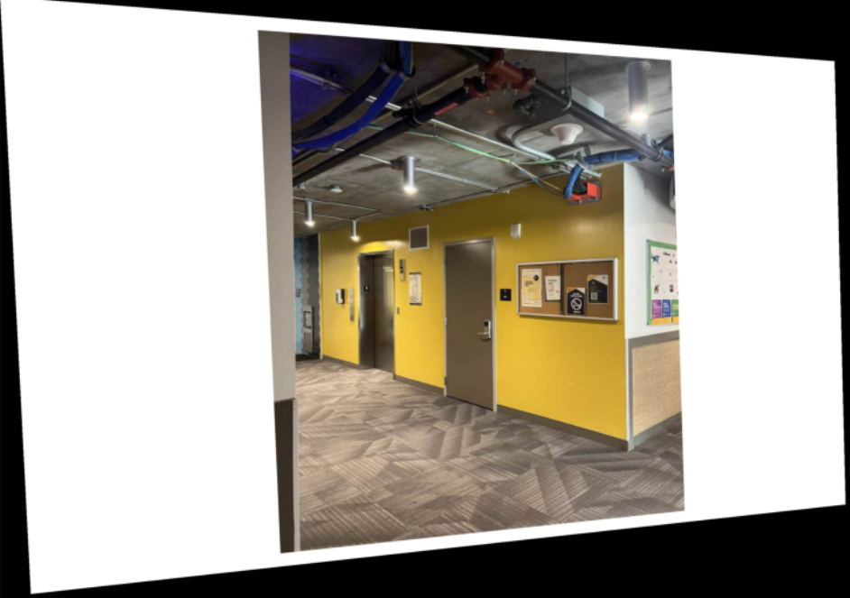
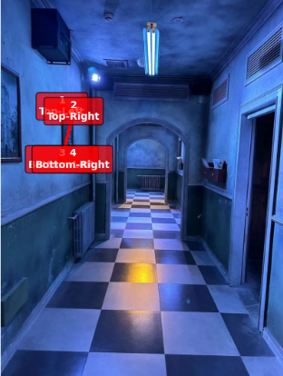
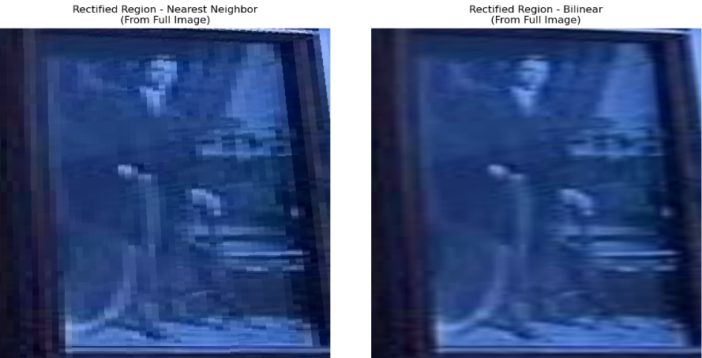

Project Overview
This project implements a complete pipeline for creating image mosaics by recovering homographies between images, warping them into alignment, and blending them seamlessly. The implementation includes both geometric correction (rectification) and photometric blending for professional-quality results.
A.1: Shoot and Digitize Pictures
Captured photographs with a fixed center of projection and rotated camera to ensure projective transformations between images. Images were taken with significant overlap (40-70%) for reliable homography recovery.


Technical Details: Images were captured with careful attention to maintaining consistent lighting and avoiding lens distortion. The overlap ensures sufficient correspondences for robust homography estimation.
A.2: Recover Homographies
Implemented homography recovery using point correspondences and least squares estimation. The system computes a 3×3 transformation matrix that maps points from one image plane to another.
Point Correspondence Selection
Manually selected 8 corresponding points between image pairs using an interactive interface.


Homography Computation
Solved the linear system Ah = b using least squares to recover the 8 degrees of freedom in the homography matrix.
Rank of matrix A: 8/8
Condition number: 4.32e+08
Sum of squared residuals: 316.03
Recovered Homography Matrix H:
[[ 1.4043 0.0489 -1089.0651]
[ 0.1035 1.1970 -119.9642]
[ 0.0002 0.0000 1.0000]]
System of Equations: Ah = b
Where h = [a, b, c, d, e, f, g, h]ᵀ
------------------------------
Eq 1: [ 1256.61 739.19 1 0 0 0 -744780.99 -438111.33] [x'1] = 592.69
Eq 2: [ 0 0 0 1256.61 739.19 1 -932917.41 -548781.04] [y'1] = 742.41
Eq 3: [ 1562.05 719.90 1 0 0 0 -1433049.55 -660449.33] [x'2] = 917.42
Eq 4: [ 0 0 0 1562.05 719.90 1 -1144608.99 -527515.77] [y'2] = 732.76
Eq 5: [ 1250.18 906.38 1 0 0 0 -740969.86 -537200.90] [x'3] = 592.69
Eq 6: [ 0 0 0 1250.18 906.38 1 -1145195.73 -830263.43] [y'3] = 916.02
Eq 7: [ 1552.40 938.53 1 0 0 0 -1429191.90 -864039.98] [x'4] = 920.63
Eq 8: [ 0 0 0 1552.40 938.53 1 -1446993.32 -874802.11] [y'4] = 932.10
Eq 9: [ 1664.93 665.24 1 0 0 0 -1688025.66 -674471.22] [x'5] = 1013.87
Eq 10: [ 0 0 0 1664.93 665.24 1 -1118292.12 -446827.24] [y'5] = 671.67
Eq 11: [ 1655.29 948.17 1 0 0 0 -1683568.46 -964374.67] [x'6] = 1017.09
Eq 12: [ 0 0 0 1655.29 948.17 1 -1553535.14 -889889.53] [y'6] = 938.53
Eq 13: [ 1590.98 996.40 1 0 0 0 -1520978.48 -952558.00] [x'7] = 956.00
Eq 14: [ 0 0 0 1590.98 996.40 1 -1580143.97 -989612.15] [y'7] = 993.19
Eq 15: [ 1578.12 1382.22 1 0 0 0 -1498536.17 -1312507.96] [x'8] = 949.57
Eq 16: [ 0 0 0 1578.12 1382.22 1 -2135643.29 -1870524.63] [y'8] = 1353.28
System Analysis: 16 equations for 8 unknowns (overdetermined system) solved using least squares with rank 8/8 and condition number 4.32e+08.
Accuracy Validation
Verified homography accuracy by measuring reprojection errors of the point correspondences.
A.3: Warp the Images
Implemented inverse warping with two interpolation methods: nearest neighbor and bilinear interpolation. Applied image rectification to demonstrate homography correctness.


Performance Analysis: Bilinear interpolation produces smoother results but is approximately 2.4× slower than nearest neighbor due to the additional computations required for weighted averaging of four neighboring pixels.
Applied homographies to rectify perspective-distorted rectangular objects back to their true shape, demonstrating the practical application of projective transformations.


Rectification Process: Selected four corners of a perspective-distorted rectangular object and computed a homography to map them to a perfect rectangle, effectively "undoing" the perspective distortion.
A.4: Blend Images into Mosaic
Created seamless panoramas by warping images into alignment and applying sophisticated blending techniques to eliminate visible seams and artifacts.


Blending Analysis: The Laplacian pyramid approach produces the highest quality results by blending images at multiple frequency bands, preserving fine details while eliminating visible seams. Weighted averaging provides a good balance between quality and computational cost.
Conclusion
This project successfully implemented a complete image mosaicing pipeline from homography recovery to seamless blending. The results demonstrate professional-quality panorama creation with accurate geometric alignment and photometrically consistent blending.
Key Achievements:
- Accurate homography recovery with mean error of 4.80 pixels
- Implementation of two interpolation methods with performance analysis
- Successful rectification of perspective-distorted objects
- Creation of three high-quality mosaics using advanced blending techniques
- Comprehensive comparison of blending methods